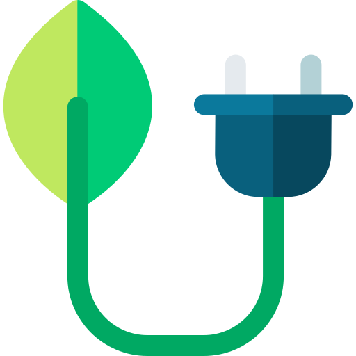
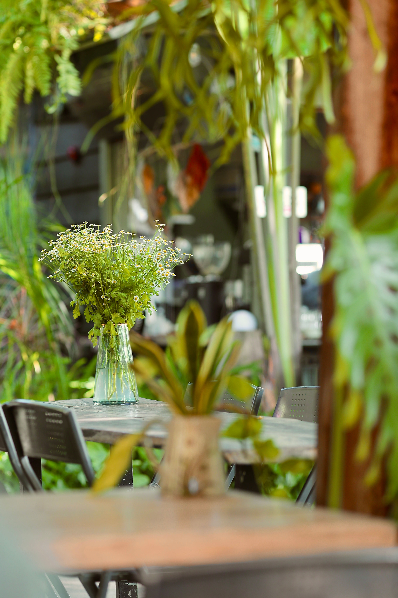
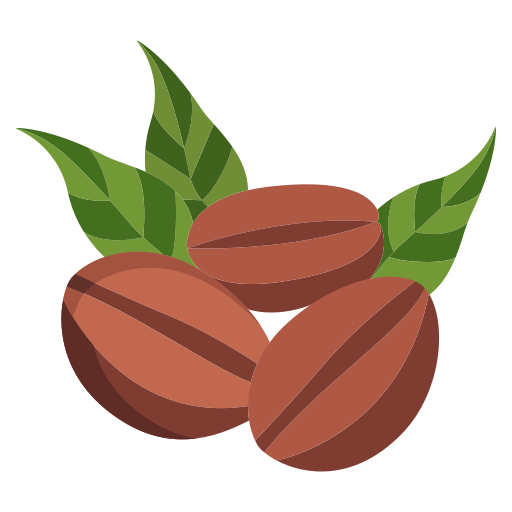

Sunlight & Indoor Greenery
Research shows that biophilic environments can increase productivity by up to 15%. Our cafe features over 50 species of indoor plants and optimised natural sunlight to keep you energised.

Welcome to Fauna Cafe, a sanctuary designed for the modern professional. We merge sustainable, ethically sourced coffee culture with biophilic design principles to lower stress and enhance your daily productivity. Step into our indoor botanical garden and experience a workspace unlike any other.
Our environment is engineered to support your workflow. We provide the infrastructure you need to succeed, surrounded by nature.

Research shows that biophilic environments can increase productivity by up to 15%. Our cafe features over 50 species of indoor plants and optimised natural sunlight to keep you energised.
Never drop a Zoom call again. We offer dedicated, unthrottled 200Mbps symmetrical fiber internet exclusively for our seated patrons, complete with backup UPS power during loadshedding.

We partner directly with Fairtrade farmers. Every cup poured supports sustainable agriculture, meaning your daily caffeine fix gives back to the environment.
Whether you need a quick espresso or a dedicated boardroom, Fauna Cafe provides premium services tailored for remote workers: